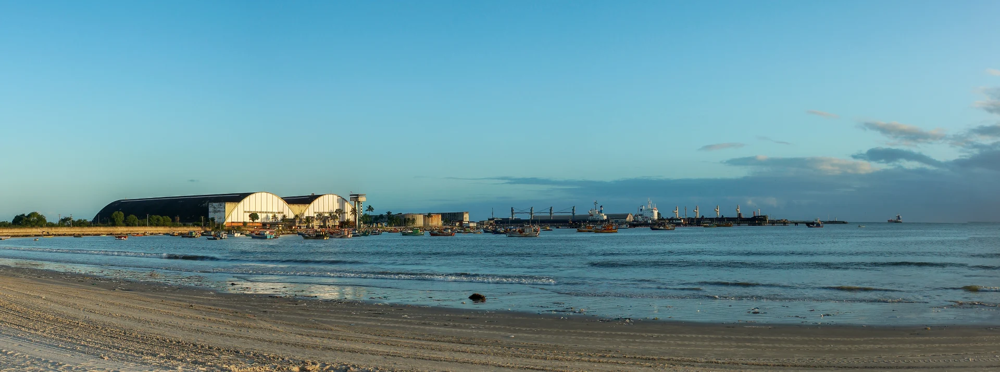

Maceió, Alagoas Nordeste brasileiro
Liberdade econômica
e desenvolvimento regional.
Pesquisa aplicada e debate público sobre como o empreendedorismo, a segurança jurídica e a qualidade das instituições podem ampliar oportunidades em Alagoas e no Nordeste.
Conheça as linhas de pesquisa
O Instituto
Economia e instituições
a partir de Alagoas
O Instituto Jaraguá é um centro de pesquisa e debate público sem fins lucrativos, sediado em Maceió. Estudamos como as regras e instituições afetam as decisões de quem empreende, investe, trabalha e presta serviços públicos.
Partimos dos problemas dos municípios alagoanos, da capital ao Sertão, e buscamos lições em outras partes do Nordeste e do Brasil. Nossa proposta é aproximar pesquisa e decisão pública por meio de estudos, notas técnicas, debates e atividades de formação.
Como trabalhamos
- Rigor e transparência
- Explicitar as fontes, as premissas e os limites de cada análise.
- Viabilidade local
- Considerar os custos, os incentivos e a capacidade de execução de estados e municípios.
- Debate aberto
- Confrontar propostas com a evidência e com a experiência de quem conhece o território.
Pesquisa
Linhas de pesquisa
Seis frentes para investigar entraves ao desenvolvimento e comparar alternativas de política pública.
-
Ambiente de negócios e regulação
Licenciamento, formalização, segurança jurídica e barreiras à entrada e ao crescimento de empresas.
-
Finanças públicas e gestão
Tributação, qualidade do gasto, transparência e capacidade de execução dos governos locais.
-
Infraestrutura e cidades
Mobilidade urbana, saneamento, logística e acesso a serviços entre municípios.
-
Educação e trabalho
Primeira infância, aprendizagem, ensino técnico e a transição dos jovens para o mercado de trabalho.
-
Economia rural, água e energia
Regularização fundiária, acesso a crédito, segurança hídrica no semiárido e oportunidades na transição energética.
-
Produtividade e diversificação
Agroindústria, turismo, economia do mar e adoção de tecnologia nas cadeias produtivas regionais.
Agenda inicial
Perguntas para
investigar
Os temas abaixo fazem parte da agenda em preparação. Estudos e notas técnicas serão divulgados à medida que forem concluídos.
-
Maceió · Mobilidade
Como reduzir o tempo de deslocamento?
Comparar alternativas para melhorar a mobilidade na capital e examinar seus efeitos sobre o acesso ao trabalho e aos serviços.
-
Municípios alagoanos · Empreendedorismo
O que dificulta a formalização de pequenos negócios?
Identificar onde licenças, registros e exigências se acumulam e quais mudanças podem reduzir custos para quem empreende.
-
Agreste e Sertão · Produção rural
Como ampliar as condições para investir no interior?
Examinar como a regularização da terra, o acesso à água e ao crédito afetam as decisões de pequenos produtores.